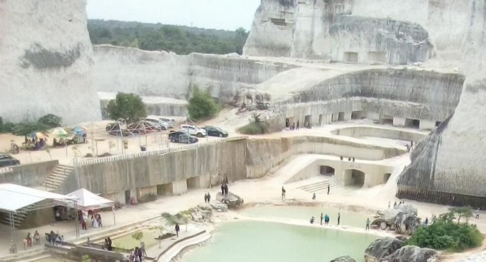
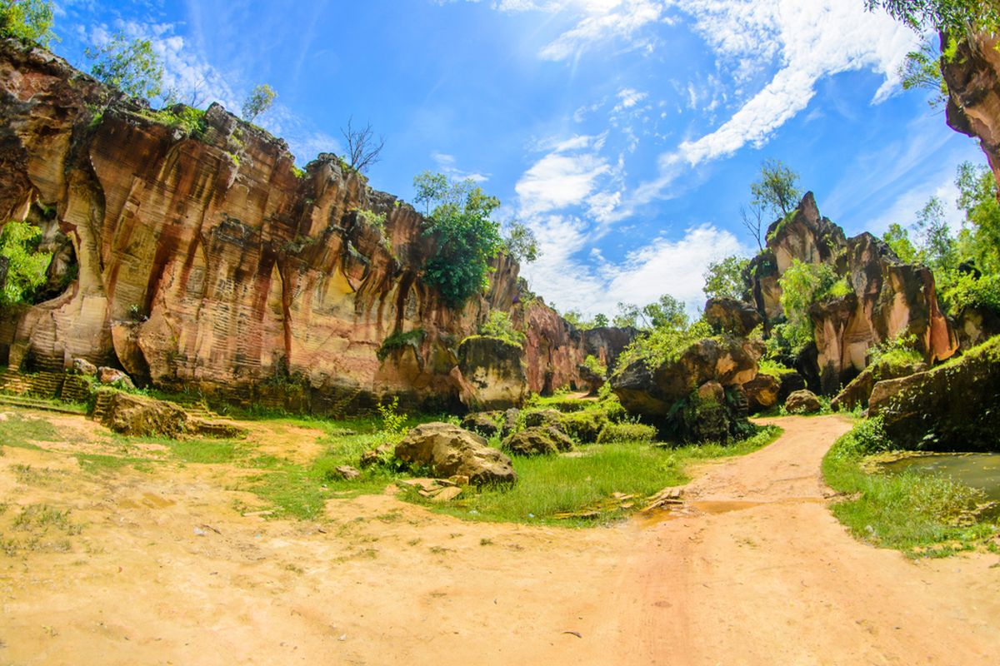
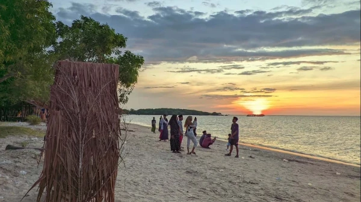

Jaddih Hill & Bukit Kapur Arosbaya: Dua Permata Bangkalan
Jaddih Hill — Si Danau Toska

Siapa sangka di balik hiruk-pikuk jalan setelah Suramadu, Bangkalan menyimpan dua bukit kapur yang luar biasa indah. Kedua tempat ini punya karakter yang berbeda — dan keduanya layak untuk dikunjungi.
Terletak di Kecamatan Socah, Jaddih Hill adalah bekas area penambangan batu kapur yang telah bertransformasi menjadi spot wisata. Yang membuat tempat ini istimewa adalah danau di dasarnya yang berwarna toska kebiruan — efek dari pantulan cahaya matahari di atas lapisan kapur putih.
Datanglah pagi hari antara jam 7–9, saat cahaya belum terlalu terik dan warna airnya paling cantik. Tiket masuk sekitar Rp 20.000 dan buka setiap hari mulai jam 7 pagi.
Bukit Kapur Arosbaya — Hidden Gem yang Lebih Liar

Kalau Jaddih sudah cukup populer, Arosbaya adalah versi yang lebih sunyi dan dramatis. Akses jalannya lebih sempit, tapi justru di situlah pesonanya. Tebing-tebing kapur putih dengan lorong-lorong alami memberi kesan seperti sedang di film petualangan.
💡 Tips Berkunjung
Untuk Arosbaya, lebih mudah menggunakan motor karena jalan masuknya sempit. Bawa uang tunai kecil untuk tiket (sekitar Rp 5.000–20.000) dan datang sebelum jam 9 pagi untuk cahaya terbaik.
Pantai Tengket — Pesona Sunset Unik dengan Siluet Pohon Tengket

Di sisi barat kota, berdiri sebuah mercusuar tua yang kini jadi daya tarik wisata sejarah. Sekelilingnya ada hutan mangrove kecil dan hamparan laut. Saat sore menjelang, sunset di sini tidak ada tandingannya. Masuk gratis, buka jam 8 pagi sampai 4 sore.
💡 Tips Berkunjung
Untuk akses menuju Pantai Tengket, lebih mudah menggunakan motor karena jalan masuknya berpasir. Bawa uang tunai kecil untuk tiket parkir (buat motor hanya Rp 5.000 dan mobil Rp 20.000) dan datang sekitar jam 16.00 - 17.00 untuk menyaksikan sunset yang indah.